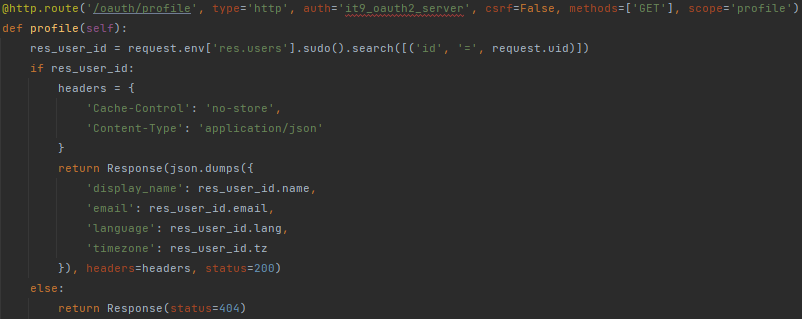

Standard OAuth2 Server
by IT9@2022
Let your Odoo ERP be an authentication server. Other applications that
supported OAuth2 can connect with your Odoo account.
- Users can sign in multiple apps with just a single account.
- Administrators can control all connected applications in one site.
- Developers can restrict what can be accessed by the collab applications.
How It Works
Please refer (https://oauth.net/2/) for more details about OAuth 2.0.
User Guide
This section will show you how to set up the OAuth2 server to let other sites/apps to
access.
- Client Name: The name that can identify which application is it
- Logo: The URL of image that can identify the application
- Client Website: The URL of application
- Grant Types: Which type of authentication methods can be used by this application
- Redirect Uris: Which pages can be redirected to while processing grant type = "Authorization Code"
- Response Types: The result format of token response
- Scopes: This application can only access the Odoo resources which has this scope
- Token Expires in: The default expire period of token. The unit is seconds.
- Expired at: This application will not able to access after this date
Cautions
The client ID and secret will not display while creating the record. You can find the
ID after saved the record and get the secret by clicking the refresh button.
How to apply
Please read (https://oauth.net/2/) to realize which parameters need to be passed.
- Authorization Page
- GET {Your Odoo Server}/oauth/authorize
- e.g. http://localhost:8069/oauth/authorize
- Access Token
- POST {Your Odoo Server}/oauth/token
- e.g. http://localhost:8069/oauth/token
- Basic User Profile
- GET {Your Odoo Server}/oauth/profile
- e.g. http://localhost:8069/oauth/profile
Developer Guide
Please take a look for a reference at "/controllers/profile.py"

When building the interface for other applications, you can set the "auth" to "it9_oauth2_server" and define a new scope
in the "@http.route". This addon will automatically verify the token and the permission.
Cautions
If you defined a new scope, please create a correlation record at model "oauth2.scope". After that, the administrators can
assign the new scope to applications.